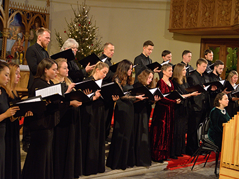
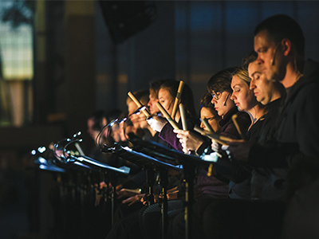
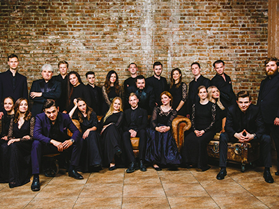

Вокальный ансамбль INTRADA под руководством Екатерины Антоненко ― московский коллектив нового поколения, чьи выступления отличают не только высокий профессиональный уровень, но и узнаваемый исполнительский стиль. В 2019 году ансамбль признан «коллективом года» по версии газеты «Музыкальное обозрение».
Екатерина Антоненко

INTRADA регулярно сотрудничает с ведущими коллективами и музыкантами России и Европы, такими как Российский Национальный Оркестр и Михаил Плетнев, «Il Giardino Armonico» и Джованни Антонини, Камерный ансамбль «Солисты Москвы» и Юрий Башмет, Государственный Академический Симфонический Оркестр России и Владимир Юровский, «Оркестр Века Просвещения», «Lе Poème Harmonique» и Венсан Дюместр, «The Tallis Scholars» и Питер Филлипс, VOCES8, «I Fagiolini» и Роберт Холлингворт, Фридер Берниус, Стивен Лэйтон, Ханс-Кристоф Радеман, Жан-Кристоф Спинози и др. Коллектив неоднократно принимал участие в «Декабрьских вечерах Святослава Рихтера» в ГМИИ им. А. С. Пушкина, дебютировав на этом фестивале в 2011 году.
Вокальный ансамбль INTRADA с успехом представлял нашу страну на европейских музыкальных фестивалях, таких как Дрезденский культурный форум (2015), Дрезденский музыкальный фестиваль (2017, 2019), «Musikfest Erzgebirge» (2016), концертная серия немецкого радио «Культура» в легендарном замке Вартбург (2018), «Lausitz-Festival» (2019) и «Live From London» (2021).
Вокальный ансамбль INTRADA осуществляет премьеры сочинений XX-XXI веков, среди которых российская премьера мессы для двойного хора а капелла Ф. Мартена и московская премьера сочинения Дэвида Лэнга «Страсти по девочке со спичками». В 2014 году Екатерина Антоненко и Питер Филлипс выступили инициаторами проведения в Москве фестиваля памяти сэра Джона Тавенера: на заключительном концерте фестиваля в Большом зале Московской консерватории состоялось второе в мире исполнение «Requiem Fragments» Тавенера при участии «The Tallis Scholars», INTRADA и Юлии Лежневой. Коллектив является первым исполнителем сочинений Клауса Ланга, Алексея Сысоева, Владимира Раннева, Ильи Демуцкого, Франка Кристофа Езникяна и Армана Гущяна. В 2020 году в рамках международного фестиваля вокальной музыки Opera Apriori совместно с ансамблем VOCES8 вокальный ансамбль INTRADA исполнил мировую премьеру сочинения Ивана Муди «Преображение».
